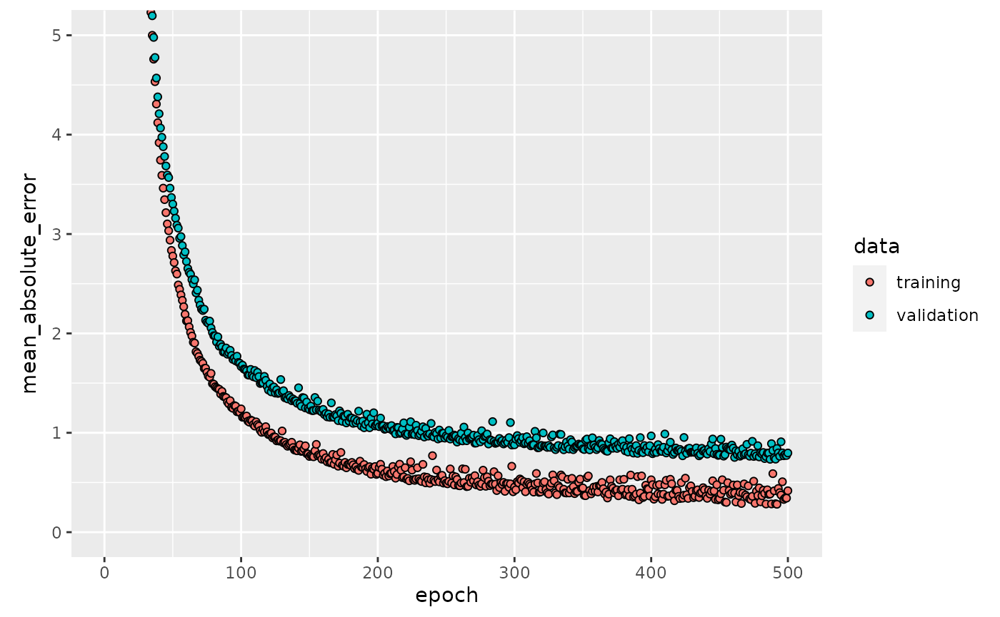
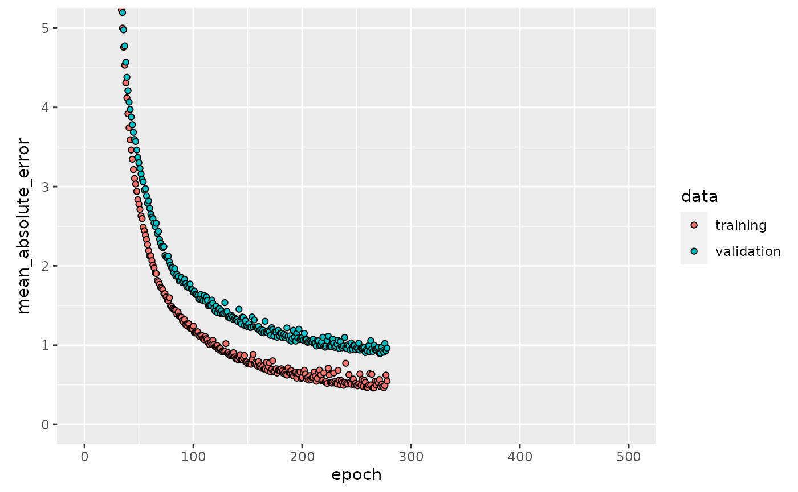

Boston Housing Task
Henri Funk
2021-02-09
Source:vignettes/usecase_bostonhousing.Rmd
usecase_bostonhousing.RmdIntro
This use case shows how to use mlr3keras on simple Boston Housing Regression Task. Therefore, code from Keras Basic Regression Tutorial is translated to mlr3, respectively mlr3keras syntax.
Note, that this tutorial describes how to fit a custom, neural network architecture. This approach can help dealing with specific situations or with incorporating special network structures. mlr3keras also offers a few “ready-made” learners that, given that hyperparameters are properly tuned might often yield good performance. Examples for such learners include the kerasff, smlp, smlp2 and tabnet learners. Those methods often also include approaches for handling categorical variables.
This use case extends the tutorial mentioned above by
- giving an introduction to callbacks and how they can be used
- generating reproducible results with mlr3keras
As mlr3keras is still under heavy development, this might be a good place to look for currently working aspects of the package.
Basic Regression Task - Boston Housing Prices
In this use case, we build a model that predicts the Median value of owner-occupied homes in Boston in $1000’s (medv).
The "Boston Housing Task" is accessible directly from mlr3tasks.
boston_task = tsk("boston_housing")
paste(
"This data set contains", boston_task$nrow, "observations and",
boston_task$ncol - 1, "features."
)## [1] "This data set contains 506 observations and 18 features."Feature selection
The custom keras regression learner we want to show here only supports numeric features. Consequently we drop all non-numeric features from boston_task.
boston_task$select(subset(boston_task$feature_types, type == "numeric")$id)The preprocessed data set contains 13 different numeric features:
-
crim- per capita crime rate by town -
zn- proportion of residential land zoned for lots over 25,000 sq.ft. -
indus- proportion of non-retail business acres per town. -
nox- nitric oxides concentration (parts per 10 million) -
rm- average number of rooms per dwelling -
age- proportion of owner-occupied units built prior to 1940 -
dis- weighted distances to five Boston employment centres -
ptratio- pupil-teacher ratio by town -
b- 1000(Bk - 0.63)^2 where Bk is the proportion of blacks by town -
lstat- % lower status of the population -
cmedv- a numeric vector of corrected median values of owner-occupied housing in USD 1000 -
lon- a numeric vector of tract point longitudes in decimal degrees -
lat- a numeric vector of tract point latitudes in decimal degrees
boston_task$head(n = 3)## medv age b cmedv crim dis indus lat lon lstat nox
## 1: 24.0 65.2 396.90 24.0 0.00632 4.0900 2.31 42.2550 -70.955 4.98 0.538
## 2: 21.6 78.9 396.90 21.6 0.02731 4.9671 7.07 42.2875 -70.950 9.14 0.469
## 3: 34.7 61.1 392.83 34.7 0.02729 4.9671 7.07 42.2830 -70.936 4.03 0.469
## ptratio rm zn
## 1: 15.3 6.575 18
## 2: 17.8 6.421 0
## 3: 17.8 7.185 0Notice that each one of these input data features is stored using a different scale. Although the model might converge without feature normalization, it makes training more difficult, and it makes the resulting model more dependent on the choice of units used in the input. Tp scale the data we create a "PipeOpScale" that is going to be connected to the learner before training.
po_scale = PipeOpScale$new()Create the model
As creation of models is very convenient and intuitive in keras, mlr3keras relies on this syntax for model creation. We wrap our model in a function build_modell. That has several advantages:
- Each new learner needs a separately build model, if you aim to train a whole new model! Cloning the learner is not sufficient in this case and will lead to continue training one and the same model in a new learner. You might notice a flat history curve in such cases.
- A modell is a hyperparameter in a Learner. For this reason a
build_modell-functions’ arguments can be used to tune over different modells. For more information about tuning see mlr3 manual. - You can easily build models with reproducible and comparable results by assigning a seed to the
build_model.
Note, that seed setting is not trivial in keras. If you are interested in more details, see chapter Set Seed.
build_model = function(seed = 123L) {
if (seed > 0L) mlr3keras_set_seeds(seed)
model = keras_model_sequential() %>%
layer_dense(units = 64L, activation = "relu",
input_shape = boston_task$ncol - 1L) %>%
layer_dense(units = 64L, activation = "relu") %>%
layer_dense(units = 1L)
model %>% compile(
loss = "mse",
optimizer = optimizer_rmsprop(),
metrics = list("mean_absolute_error")
)
model
}
model = build_model()
model %>% summary()## Model: "sequential"
## ________________________________________________________________________________
## Layer (type) Output Shape Param #
## ================================================================================
## dense_2 (Dense) (None, 64) 896
## ________________________________________________________________________________
## dense_1 (Dense) (None, 64) 4160
## ________________________________________________________________________________
## dense (Dense) (None, 1) 65
## ================================================================================
## Total params: 5,121
## Trainable params: 5,121
## Non-trainable params: 0
## ________________________________________________________________________________For this use case we create a sequential model, a linear stack of three layers. The shape of our input data is defined in the input layer. Input is analyzed by two densely connected hidden layers. A final denselayer returns a single continuous target estimation value.
Learner
Define hyperparameters
Heading back to mlr3 syntax we set up the keras regression learner like any other and define hyperparameters. Note that the compiled model defined in the previous chapter needs to be defined as a hyperparameter in the learners’ param_set.
Callbacks
Another hypereparameter is callback. A callback is a set of functions, bundled in a list that can be used to explore and manipulate specified progress stages during training. Accordingly a defined callback function is called at its’ specified stage of training to monitor or display specified model parameters at this stage. The history callback, for example, tracks the train and validation loss after each epoch. It stores the training history in a history slot of its’ concerning model object. For a list of all implemented callbacks see Keras Callbacks.
In our learner we want to reduce information about training progress. Therefore we create a LambdaCallback that is called at each epochs end and assign it to the learners’ callbacks-hyperparameter. This Callback will print a “.” after every epoch and newline after every 80 epochs.
print_dot_callback = callback_lambda(
on_epoch_end = function(epoch, logs) {
if (epoch %% 80 == 0) cat("\n")
cat(".")
}
)
learner$param_set$values$callbacks = list(print_dot_callback)mlr3keras contains a set of often-used callbacks for the user’s convenience.
-
cb_es: Early stopping callback -
cb_lrs: Learning rate scheduler callback -
cb_tb: Tensorboard callback -
cb_lr_log: Learning rate logger callback -
LogMetrics: Batch-wise Metrics Logger Callback -
SetLogLR: Batch-wise Metrics Setter Callback
Initialize early stopping like this:
# early_stop = callback_early_stopping(monitor = "val_loss", patience = 20) # keras syntax
early_stop = cb_es(monitor = "val_loss", patience = 20) # mlr3 syntaxSetting up the learner
We initialize our learner. Note, that we clone the R6 object keras_500 learner to a second object keras_es that we will use later on.
keras_500 = GraphLearner$new(po_scale %>>% learner)
keras_es = keras_500$clone(deep = TRUE)Training
Before we train the learner we divide observations randomly into train and test set. The training set contains 404 observations and the test set 102. Now we can train our learner, using the training_id. Reminder: The callback setting vizualizes training progress by a dot after each epoch.
train_id = sample(boston_task$row_ids, 404L)
test_id = setdiff(boston_task$row_ids, train_id)
keras_500$train(boston_task, row_ids = train_id)##
## ................................................................................
## ................................................................................
## ................................................................................
## ................................................................................
## ................................................................................
## ................................................................................
## ....................Visualize training progress
Lets’ plot each epochs’ saved history. The plot shows the MAE on training and validation set for each epoch.
history = keras_500$model$regr.keras$model$history
plot(history, metrics = "mean_absolute_error", smooth = FALSE) +
coord_cartesian(ylim = c(0, 5))
The validation curve noticeably flattens after about 200 epochs. So epochs = 500L seems to be set to high. In this case we can implement the early stopping callback introduced in the previous chapter. early_stop will stop the model if it shows no improvement in val_loss within 20 epochs.
Train with early stopping
We train exactly the same keras model, using early stopping callback.
keras_es$param_set$values$regr.keras.callbacks = list(early_stop, print_dot_callback)
keras_es$param_set$values$regr.keras.model = build_model()
keras_es$train(boston_task, row_ids = train_id)##
## ................................................................................
## ................................................................................
## ................................................................................
## ......................................
history = keras_es$model$regr.keras$model$history
plot(history, metrics = "mean_absolute_error", smooth = FALSE) +
coord_cartesian(xlim = c(0, 500), ylim = c(0, 5))
Note that each epoch until stopping is exactly the same as in keras_500.
Predict and evaluate
In the last step we predict on the test set using keras_es. Prediction is as easy as with any other learner. For prediction we take the test_id.
predict_boston = keras_es$predict(boston_task, row_ids = test_id)
head(predict_boston$data$tab, n = 3)## NULL
predict_boston$score(msr("regr.mae"))## regr.mae
## 0.7864365## [1] "The models average error is at 786.44$"Reproducibility - Setting a seed
Keras has mutiple sources of stochasticity. Pseudo Random Numbers can be gernerated while
- initializing weights
- ordering in batches
- set up model architecture
- parallel execution
True reproducibility can only be guaranteed if code is not run in parallel and initial weights are fixed. As Keras can run code across multiple devices obtaining reproducible results is not trivial. This chapter suggests ways to easily obtain reproducible results anyways.
TensorFlow versions
TensorFlow provides a function to set seeds called use_session_with_seed(). RKerasFAQ shows a convenient way to set seeds by this function. However use_session_with_seed() appears to work only partly for TensorFlow-version \(\ge 2.0\). If you use TensorFlow-version \(< 2.0\) use_session_with_seed() should run without problems. You can check the current version like this:
tensorflow::tf_version()With mlr3keras_set_seeds mlr3 keras provides an alternative solution that should work on any TensorFlow-version.
mlr3keras_set_seeds
As you might have noticed we have already been using mlr3keras_set_seeds function in this chapter to obtain reproducible results. We introduced this function because in some incidences you might run into an error calling use_session_with_seed() with TensorFlow-version \(< 2.0\).
tensorflow::use_session_with_seed(1L)## Set session seed to 1 (disabled GPU, CPU parallelism)In these cases it makes sense to use mlr3keras function mlr3keras_set_seeds. mlr3keras_set_seeds establishes a common random seed for R, Python, NumPy, and TensorFlow, disables hash randomization by choice. Note, that you should not have been running TensorFlow before running the function. If you did you might have to restart the session before proceeding.
For more information see Stackoverflow Reset Seeds.
Non-deterministic execution
GPU computations and CPU parallelize can be another source of non-reproducible results, since both can result in non-deterministic execution patterns. In this case the only way to provide the modell from non-reproducible results is to disable GPU and CPU parallelism. Note, that this can mean a hard trade-off between time and reproducability. use_session_with_seed() disables both GPU and CPU by default. For more detailed description read the code on Github. mlr3keras_set_seeds provides arguments to disable parallelization by choice. For more information read code documentation on Github.